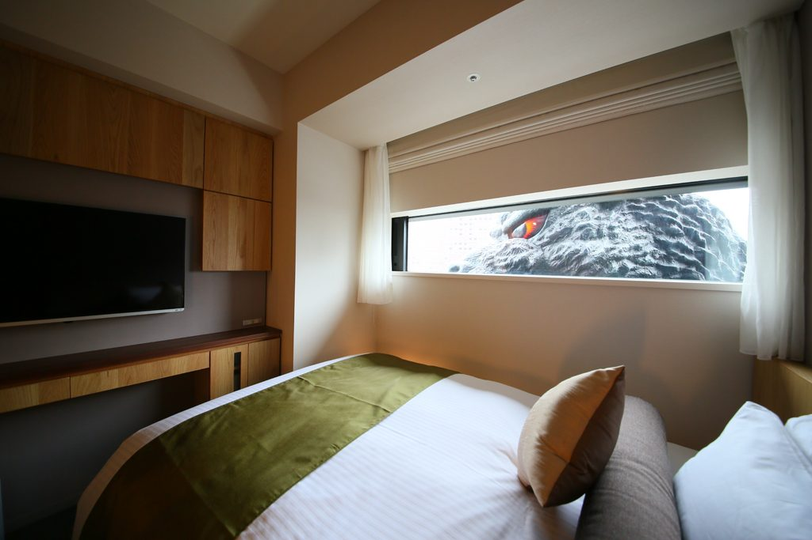

· El dia 11 de Mayo saldremos del aeropuerto del Prat dirección China.
· El dia 12 llegaremos a Pekin a las 7h de la mañana.
· El dia 13 será nuestro dia de descanso.
· El dia 14, nuestro esperado maraton ha llegado!
Costes

INCLUYE
· Vuelo
· Inscripción
· Traslados
· Alojamiento en hotel 5 estrellas
· Comidas y cenas de acuerdo al itinerario
Discord
Si lo necesitais para hacar cualquier consulta
podeis contacar con MaraCarlos.co por la aplicación
Discord en la cual se resolveran vuestras inquietudes
Maps
El recorrido del maraton empieza en el punto indicado en el mapa, el recorrido cuenta con 42,3 kilometros de distancia. Si no queda claro os dejamos un video donde podeis consultarlo
Información
Nombre
Apellido
Tiempos
ANTONIO
GARCIA
5h:59m:34s
MARIA
MARTINEZ
6h:14m:27s
CARMEN
LOPEZ
6h:23m:52s
MIGUEL
SANCHEZ
6h:43m:19s
ISABEL
GONZALEZ
6h:36m:08s
JAVIER
MORENO
6h:03m:51s
CARLOS
JIMENEZ
6h:21m:45s
Si usted desea obtener más información sobre nuestro maraton puede consultar nuestra infografia que la puede obtener haciendo click en el boton de descarga.
The Great Wall 21
“Debes hacer las cosas que crees que no puedes hacer.”